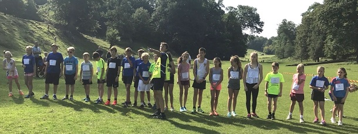

Twenty-one SAC runners contested the Sevenoaks 7 on bank holiday Monday 28th August and came away with both the men's and women's team titles. James Mason was second, David Lee fourth, Heather Fitzmaurice fifth woman and second W45, Jim Fitzmaurice second M70, James Graham second M60 and Jacqui O'Reilly third senior woman. The SAC results were as follows:
| Pos- ition | Bib- No. | Finish Time | Chip Time | Name | Gen- der | Cat- egory | Club or Team | Rank |
|---|---|---|---|---|---|---|---|---|
| 2 | 4 | 00:42:06 | 00:42:04 | JAMES MASON | M | SM | Sevenoaks AC | 1 |
| 4 | 160 | 00:42:52 | 00:42:51 | DAVID LEE | M | SM | Sevenoaks AC | 2 |
| 9 | 165 | 00:46:09 | 00:46:07 | JOHN WITTON | M | SM | Sevenoaks AC | 3 |
| 15 | 156 | 00:47:19 | 00:47:16 | ANDY NICOLL | M | SM | Sevenoaks AC | 4 |
| 16 | 205 | 00:47:29 | 00:47:24 | NICK HUMPHREY-TAYLOR | M | M40 | Sevenoaks AC | 5 |
| 19 | 92 | 00:48:25 | 00:48:22 | LEE LINTERN | M | SM | Sevenoaks AC | 6 |
| 20 | 101 | 00:48:36 | 00:48:33 | DANIEL WITT | M | M40 | Sevenoaks AC | 7 |
| 25 | 28 | 00:49:55 | 00:49:53 | ANDREW HUTCHINSON | M | SM | Sevenoaks AC | 8 |
| 28 | 187 | 00:50:11 | 00:50:08 | JAMES GRAHAM | M | M60 | Sevenoaks AC | 9 |
| 34 | 173 | 00:52:07 | 00:52:03 | TED SCOTT | M | M50 | Sevenoaks AC | 10 |
| 37 | 120 | 00:52:18 | 00:52:16 | HEATHER FITZMAURICE | F | W45 | Sevenoaks AC | 11 |
| 41 | 146 | 00:52:44 | 00:52:42 | JACQUELINE O'REILLY | F | SW | Sevenoaks AC | 12 |
| 59 | 133 | 00:56:13 | 00:56:04 | SIMON ROWE | M | M40 | Sevenoaks AC | 13 |
| 93 | 23 | 01:01:57 | 01:01:53 | IAN KING | M | SM | Sevenoaks AC | 14 |
| 96 | 183 | 01:02:16 | 01:02:14 | MARION VAN LILLE | F | SW | Sevenoaks AC | 15 |
| 116 | 21 | 01:05:18 | 01:05:16 | GRAZIA MANZOTTI | F | W45 | Sevenoaks AC | 16 |
| 128 | 202 | 01:06:56 | 01:06:45 | ANNA HUMPHREY-TAYLOR | F | W45 | Sevenoaks AC | 17 |
| 153 | 59 | 01:11:15 | 01:10:52 | RICHARD THOMAS | M | M60 | Sevenoaks AC | 18 |
| 156 | 168 | 01:12:11 | 01:11:59 | NEIL HAGGERTAY | M | M50 | Sevenoaks AC | 19 |
| 160 | 227 | 01:12:57 | 01:12:53 | JAMES FITZMAURICE | M | M70 | Sevenoaks AC | 20 |
| 181 | 76 | 01:17:28 | 01:16:40 | ADAM WESTBROOKE | M | M40 | Sevenoaks AC | 21 |
The full results are here.

And twelve SAC runners contested the Junior race, where Verner Krynauw won the boys race with Indy Morriss in third, and Julia Sackville-West was third in the girls race. The SAC results were:
| Pos | Name | Age | Note |
|---|---|---|---|
| 1 | Verner Krynauw (Sevenoaks AC) | 11 | 1st Boy |
| 3 | Indy Morriss (Sevenoaks AC) | 10 | 3rd Boy |
| 7 | Julia Sackville-West (Sevenoaks AC) | 12 | 3rd Girl |
| 8 | Harvey Taylor (Sevenoaks AC) | 13 | |
| 9 | Harry Holmes (Sevenoaks AC) | 8 | |
| 10 | Henry Smith (Sevenoaks AC) | 11 | |
| 13 | George Smith (Sevenoaks AC) | 11 | |
| 14 | Summer Knight-Thompson (Sevenoaks AC) | 10 | |
| 15 | Tabitha Elcock-Haskins (Sevenoaks AC) | 10 | |
| 16 | Robin Zijdenbos (Sevenoaks AC) | 13 | |
| 17 | Amelie Thompson (Sevenoaks AC) | 9 | |
| 18 | Esme Holmes (Sevenoaks AC) | 10 |
The full junior results are here.